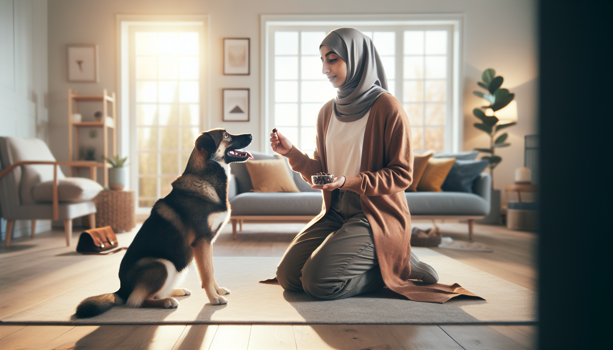

If you have ever felt like dog training requires endless time, perfect timing, or professional-level skills, here is the good news: it does not. In fact, one of the most effective ways to improve your dog’s behavior is with a short, consistent routine you can repeat every day. A focused 15-minute daily dog training routine can build better manners, stronger communication, and a calmer, more confident dog—whether you are raising a brand-new puppy, helping a rescue settle in, or polishing skills with an adult dog.
Short sessions work because dogs learn best in small, successful bursts. Science-backed training methods show that repetition, clear rewards, and manageable goals help dogs retain information and stay engaged. Long sessions often lead to frustration for both ends of the leash. Fifteen minutes, on the other hand, is realistic for busy owners and ideal for keeping your dog motivated.
The routine below is simple, flexible, and effective. You do not need a huge backyard or expensive equipment. You just need a few treats, a calm voice, and the willingness to practice every day.
Consistency beats intensity in dog training. Dogs thrive on predictable patterns, and daily practice helps behaviors become habits. When you train for just 15 minutes each day, you create repeated opportunities for your dog to make good choices and get rewarded for them.
There is also a behavioral reason this approach works. Positive reinforcement strengthens behaviors by pairing them with something the dog values, such as food, praise, play, or access to something they want. Frequent, short sessions give you more chances to reinforce attention, calmness, and responsiveness before your dog becomes distracted or tired.
This is especially important for puppies and rescue dogs. Puppies have short attention spans and are still learning how the world works. Rescue dogs may be adjusting to a new home, routine, and people. A brief daily routine helps both groups build trust and confidence without overwhelm.
Keep your setup simple. The goal is to make daily training easy enough that you actually do it.
Choose rewards your dog truly cares about. For some dogs, that is chicken or cheese. For others, it may be a favorite toy or enthusiastic praise. The better the reward, the more powerful the learning.
Also remember: training is not about dominance, punishment, or “showing your dog who is boss.” Modern, science-based dog training focuses on teaching desired behaviors clearly and reinforcing them consistently. That creates better results and a healthier relationship.
Here is the exact structure. You can use it as written or adjust the skills based on your dog’s age and needs.
Start by getting your dog engaged with you. Say their name once. When they look at you, mark with “yes” and reward. Repeat several times. You can also reward eye contact, calm standing, or choosing to stay near you. This warm-up teaches your dog that paying attention is worthwhile.
Pick one main behavior to practice, such as sit, down, come, touch, or leash walking position. Keep it simple. Ask for the behavior, mark the moment your dog gets it right, and reward. Do several short repetitions. If your dog struggles, make it easier rather than repeating the cue louder.
This is where transformation happens. Practice everyday behaviors that improve manners, such as waiting at the door, settling on a mat, leaving food alone, or offering a sit before greeting. These skills help your dog learn self-control in real-life situations.
Call your dog happily from a short distance: “Come!” When they move toward you, mark and reward generously. You can also add a little movement game, such as walking a few steps together and rewarding your dog for staying with you. This builds responsiveness and makes you more relevant than the environment.
Many owners focus only on active commands, but calmness is a trainable skill too. Reward your dog for lying down quietly, relaxing on a bed, or taking a deep breath while next to you. This helps excitable dogs learn how to settle and teaches anxious dogs that calm behavior pays off.
Finish with something your dog knows well and enjoys. Maybe it is a hand target, a sit, or a quick recall. Ending on success keeps training positive and increases enthusiasm for the next session.
You do not need to teach everything every day. Instead, rotate skills while keeping the 15-minute structure the same. This keeps training fresh and helps your dog generalize learning.
If your dog has a specific challenge—jumping, pulling, barking, or ignoring cues outside—spend your “core cue” and “life skills” minutes on those areas. Progress comes from small, repeatable wins.
Even a great routine can fall flat if a few common mistakes creep in.
If your dog seems stuck, go back to an easier version of the exercise. Learning is not linear, and setbacks are normal.
The most effective dog training plan is the one you can maintain. Attach your 15-minute routine to something you already do, such as after your morning coffee, before dinner, or after your dog’s walk. Keep treats in an easy-to-reach place. Use a checklist if that helps you stay consistent.
It also helps to think beyond formal sessions. Real-life reinforcement is powerful. Ask for a sit before meals. Reward your dog for checking in on walks. Mark calm behavior while you watch TV. These mini moments support your daily routine and speed up progress.
If you live with family members, get everyone on the same page. Use the same cues, the same reward system, and the same expectations. Dogs learn faster when humans are consistent.
Transformation does not mean your dog becomes a robot. It means your dog becomes easier to live with, more responsive, and more emotionally balanced. You may notice your puppy starts offering eye contact instead of biting at your sleeves. Your rescue dog may begin relaxing on a mat instead of pacing. Your adult dog may stop dragging you down the street and start checking in with you on walks.
These changes often look small at first, but they add up quickly. A dog who can focus, settle, come when called, and make good choices in daily life is a dog who feels safer and more connected to you.
And that is the real power of a 15-minute daily dog training routine: it does not just teach cues. It builds communication, trust, and habits that improve every part of life together.
You do not need marathon sessions to see meaningful progress. With just 15 minutes a day, you can teach your dog to pay attention, respond reliably, and handle everyday life with more calm and confidence. Keep sessions short, rewarding, and consistent. Focus on progress, not perfection. Over time, those daily minutes become the foundation for a well-mannered dog and a stronger bond.
If you are feeling overwhelmed, start tomorrow with the first two minutes: say your dog’s name, reward eye contact, and build from there. Small steps, repeated daily, create lasting change.
Get our full Dog Training eBook series — new titles added weekly.